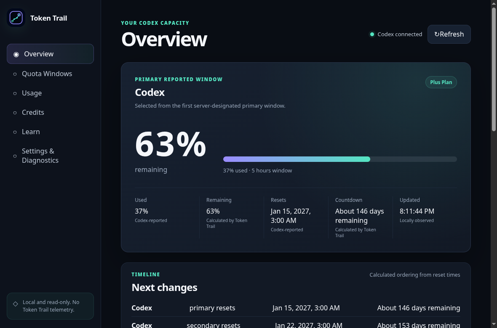
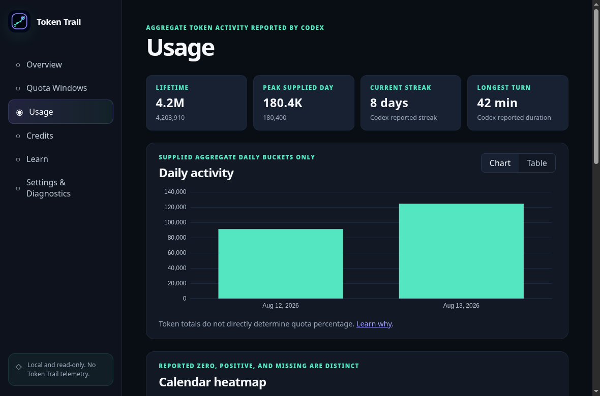

Read-only by design
Exactly three approved reads plus one update notification, allowlisted before they ever reach Codex. No task control, no account changes, ever.
Free & open source · GPL-3.0 · Linux
Token Trail is a read-only desktop dashboard that shows your local OpenAI Codex usage clearly: quota windows, token activity, reset times, and credits. It reads only what it must, keeps everything in memory, and never sends your data anywhere.
v1.0.0 · first stable release · verify checksums before running

Exactly three approved reads plus one update notification, allowlisted before they ever reach Codex. No task control, no account changes, ever.
Usage snapshots live only in RAM while Token Trail runs. Close the app and they are gone: no history file, no cache, nothing to sync.
No telemetry, no crash reporting, no analytics, no update checks, no remote assets. The packaged build's CSP blocks remote code outright.
Every value states where it came from, whether that is reported by Codex, observed locally, or calculated by Token Trail. Missing values stay visibly unavailable instead of pretending to be zero.
Quota windows with used/remaining percentages, reset times, countdowns, provenance labels, and freshness states on one calm screen.
Grouping, sorting, raw-safe details, a reset timeline, attention ordering, and session-change observations kept in memory only.
Date ranges with a daily chart, calendar heatmap distinguishing real zeros from missing days, accessible tables, statistics, and coverage reporting.
Balance, unlimited state, spending limits, reached state, and reset-credit expiry using the exact seven-day display rule.
Built-in explanations of quotas, tokens, credits, provenance, privacy, and statistics, linked contextually from the metrics themselves.
Light/dark/system themes, refresh choices, and a fully previewed redacted diagnostics export. Clear-data wipes your preferences after confirmation.

These are enforced boundaries in code, not policies a setting could loosen.
Account information, rate-limit windows, and aggregate usage. Nothing else is requested, and responses are stripped of every field outside the approved set.
The only thing ever written is your preferences document: display choices like theme and refresh settings. No usage value can appear in it.
Authentication belongs entirely to Codex. Token Trail never sees, copies, stores, or refreshes your credentials.
Token Trail cannot read or store prompts, responses, tasks, repositories, files, tool calls, transcripts, or browser sessions.
The support export comes from a fixed allowlist of fields, structurally excludes identifiers and paths, and you preview it fully before saving.
Sandboxed renderer, context isolation, strict self-hosted CSP, deny-by-default navigation and permissions, single-instance lock, Electron fuses.
Four package formats, two architectures (x64 and arm64). Artifacts are unsigned, so checksums are the integrity mechanism: download from GitHub Releases and verify before running anything.
uname -mx86_64 → x64 builds (amd64) · aarch64 → arm64 builds
Grab an artifact and SHA256SUMS.txt from the Releases page, then:
sha256sum -c SHA256SUMS.txt --ignore-missingEvery file you downloaded must print OK.
Token Trail needs a working, signed-in OpenAI Codex CLI on your PATH:
codex --version && codex loginAny distribution · portable
chmod +x tokentrail-*-linux-x86_64.AppImage
./tokentrail-*-linux-x86_64.AppImageRequires FUSE 2 (libfuse2) on most distributions.
Debian · Ubuntu · Mint
sudo apt install ./tokentrail-*-linux-amd64.debRuntime libraries resolved automatically by apt.
Fedora · openSUSE
sudo dnf install ./tokentrail-*-linux-x86_64.rpmOn openSUSE use sudo zypper install … instead.
Arch · CachyOS · Manjaro
sudo pacman -U tokentrail-*-linux-x86_64.pacmanInstalled via pacman's local-package mode.
Note: "Source code (zip / tar.gz)" links on release pages are repository snapshots, not runnable builds.
Token Trail v1.0.0 was frozen and released on August 22, 2026: the complete read-only scope is implemented and machine-verified across development versions 0.1.0 through 0.5.x, each backed by recorded test reports, and the entire automated validation matrix — unit, integration, end-to-end, accessibility, security, packaged smoke, and performance gates — ran green against the release commit on release day. The tag-driven pipeline turns the v1.0.0 tag into one maintainer-reviewed draft carrying all four package formats for both architectures, merged SHA-256 checksums, per-build provenance, a CycloneDX SBOM, and structured release notes generated from the tagged changelog; publishing that draft is a deliberate maintainer action after review. The changelog, support policy, maintenance plan, and known-limitations record are published with the release. Artifact signing, update deployment, telemetry, and any broader Codex access remain deliberately separate, gated steps rather than silent defaults.
Everything about how Token Trail works is written down and versioned with the code.
Free, open source, and local-only. Download an artifact, verify its checksum, and meet your quota windows on your own desktop.